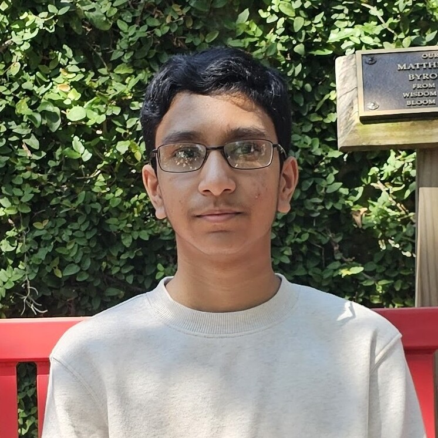
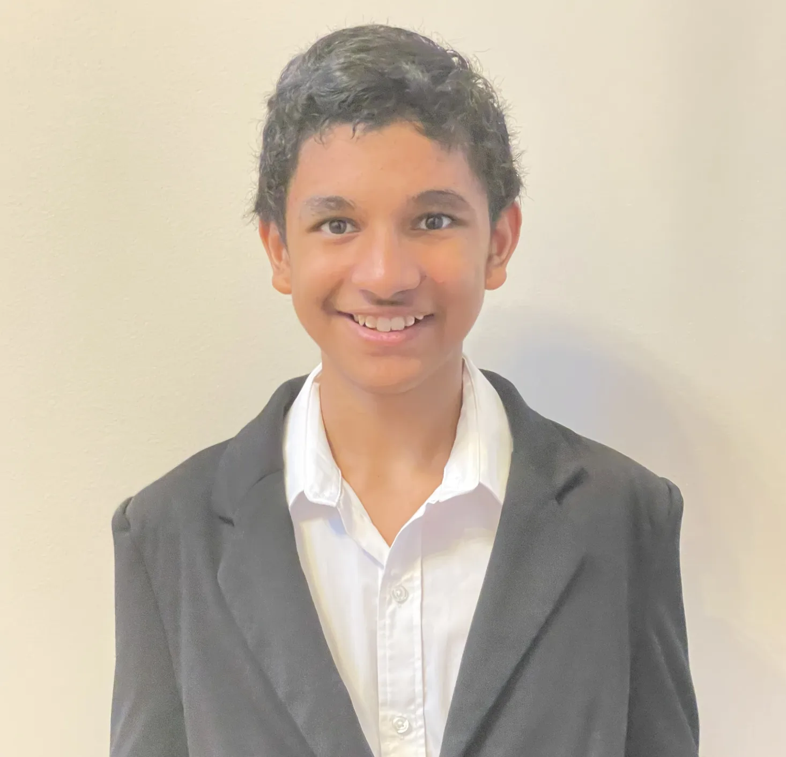

About Us
Welcome to the AI & Mathematics Information Hub!
Our mission is to provide clear, accessible, and up-to-date information about the intersection of artificial intelligence and mathematics. We aim to empower students, educators, and professionals to understand the opportunities and challenges AI brings to the mathematics industry.
Aryan Mali - Hey everyone! I am a 10th grade student and mathematics enthusiast and I go to Innovation Academy. I like to play video games, practice typing, and read. I'm interested in the complications of using AI in the current state of the world in math because of considerations required in ethics and practicality. I decided to take the AI pathway because I like keeping up with the latest advancements in it and its future capabilities.

Ishan Prabhu - Hello, my name is Ishan Prabhu. I am a sophomore and I am currently going to Innovation Academy. In my free time, I like studying astronomy and playing with my little brother, Nikhil. The reason why I chose to join this class is because I want to learn more about AI, as that is the direction which the future is going in, and also because it involves a lot of logic and math, both of which I love.
